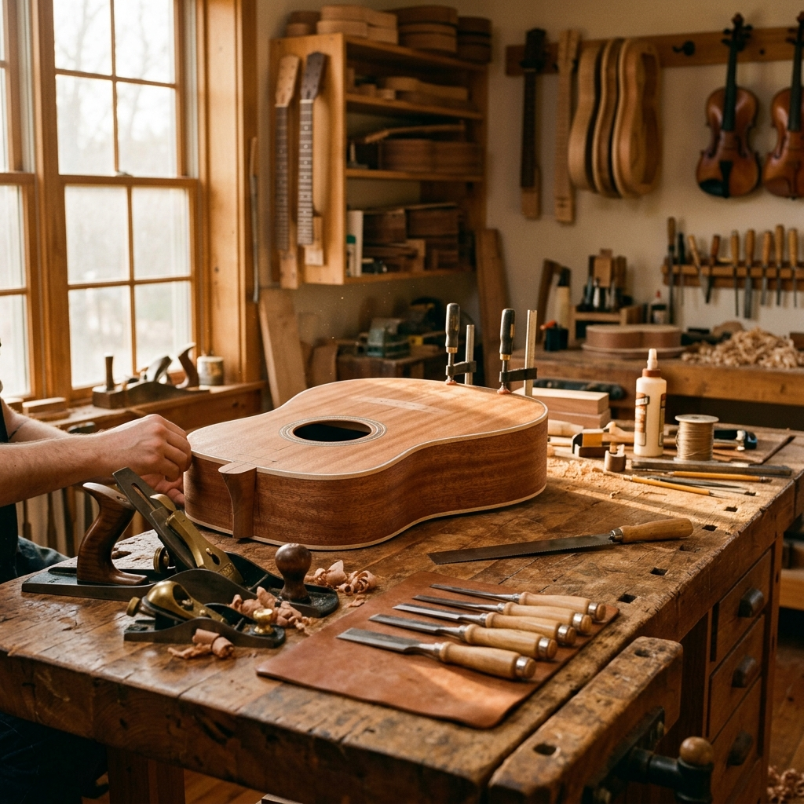
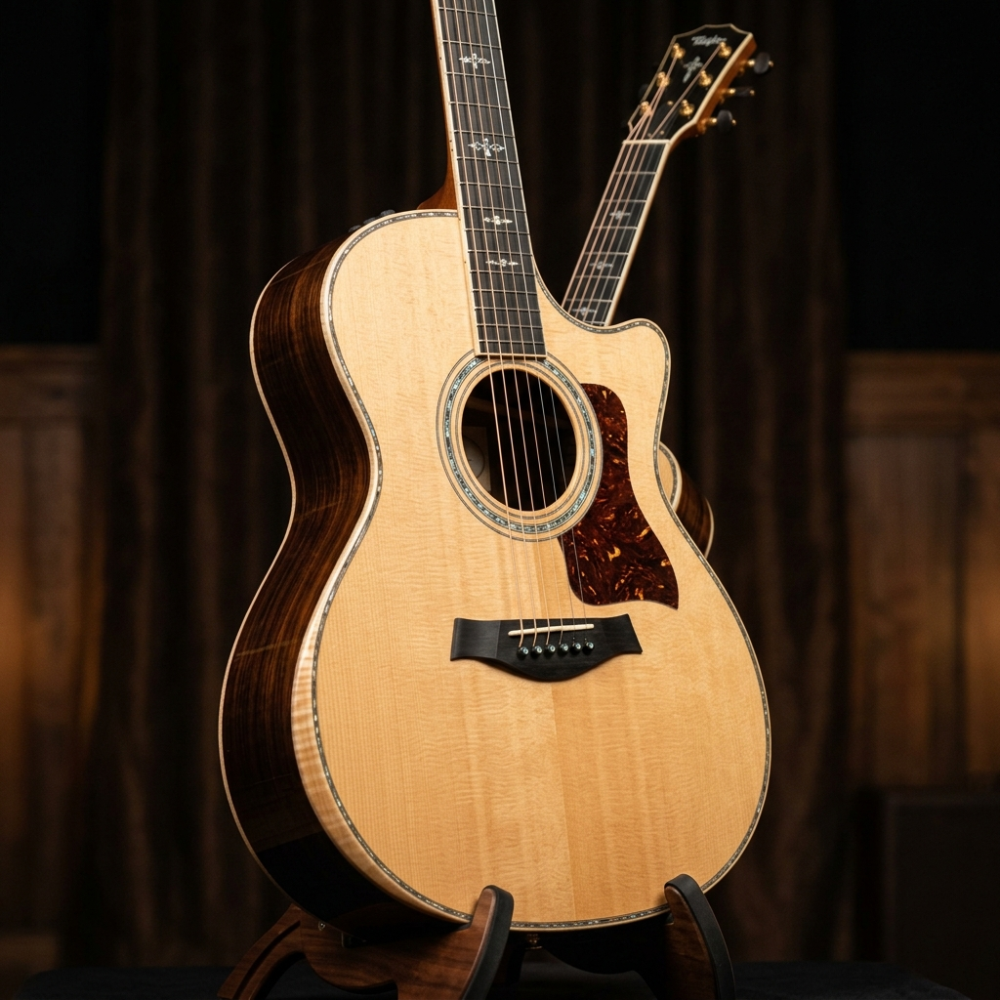

Built by Hand.
Heard for Generations.
Crafted Without Compromise
Every FRET instrument is a dialogue between the luthier and the tonewood, guided by decades of generational knowledge.
Handbuilt Masterpieces

The Grand Auditorium
Sitka Spruce Top · Indian Rosewood Back/Sides
The Classic '59
Honduran Mahogany · Figured Maple Cap
The Jazz Standard
Carved Spruce Top · Flame Maple Back/Sides
The Bespoke Baritone
Sinker Redwood Top · Ziricote Back/Sides

The Journey of a Build
Selection
Choosing the perfect tonewood sets.
Voicing
Tap-tuning and hand-carving braces.
Finishing
Ultra-thin nitrocellulose lacquer.
Setup
Precision fretwork and intonation.
In the Hands of Artists
"The responsiveness is unlike anything I've ever played. It breathes with you. The low end is thunderous, yet individual notes remain perfectly articulated up the neck."

"The neck profile on the Classic '59 fits my hand like a glove. It feels like an instrument that has been played for 40 years, right out of the case."

"They completely restored my grandfather's 1942 dreadnought. The structural integrity is perfect, yet they preserved all the mojo and patina. Masterful work."